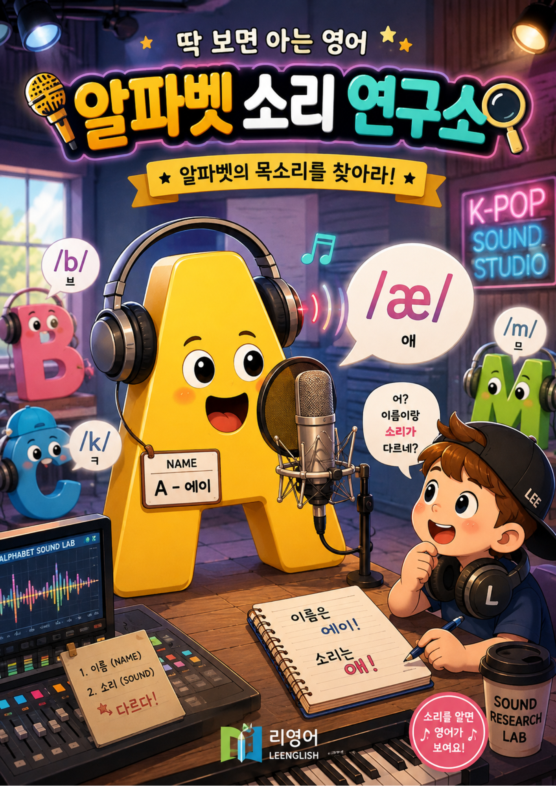
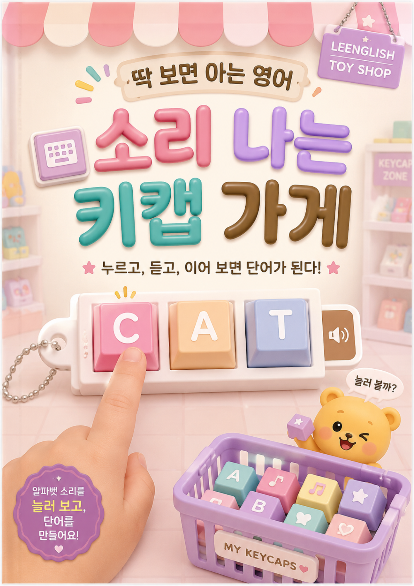
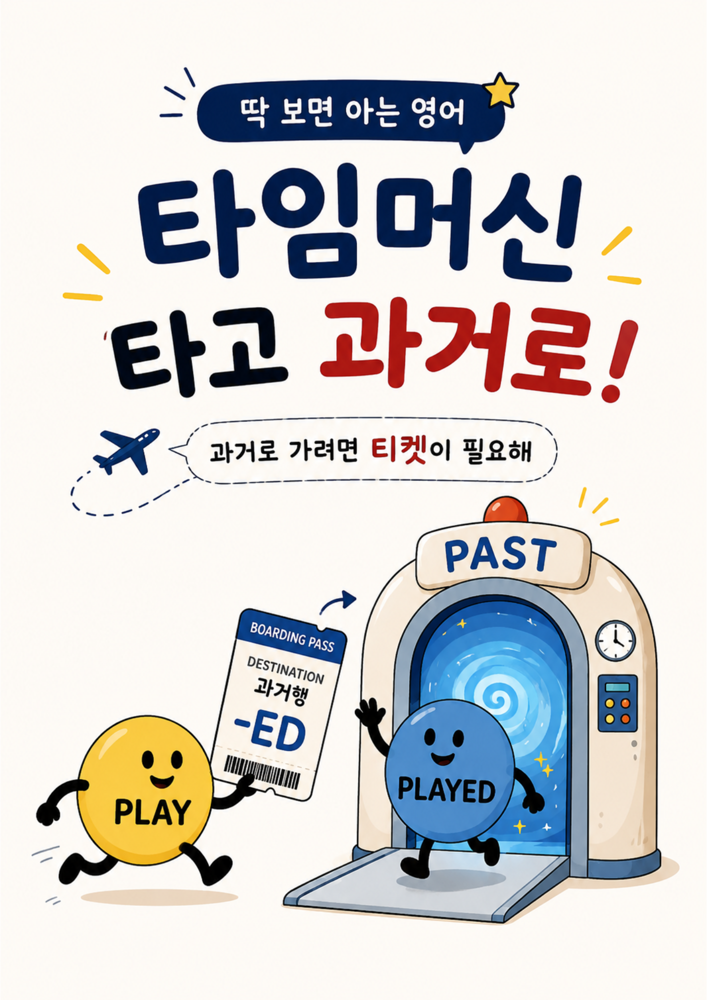
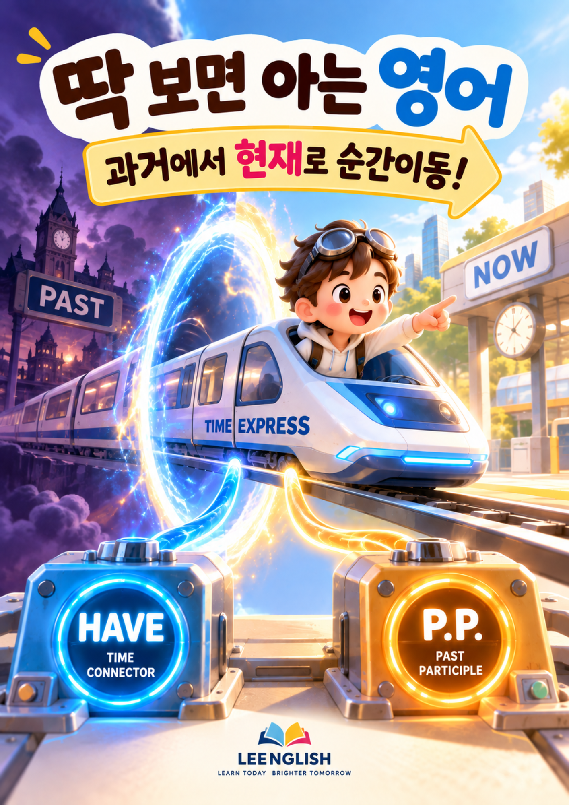
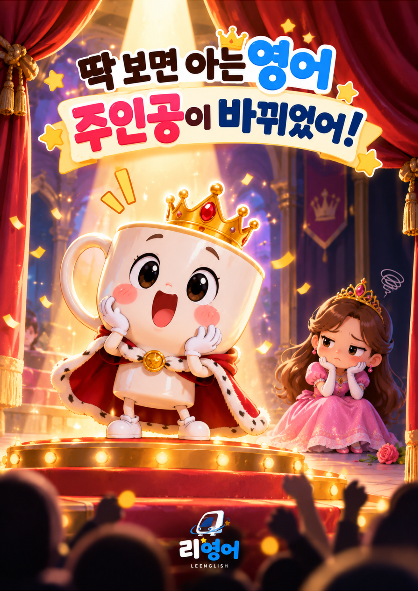
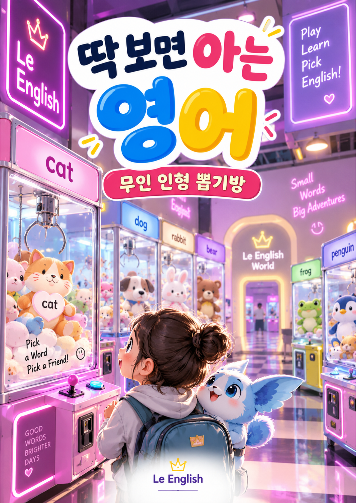
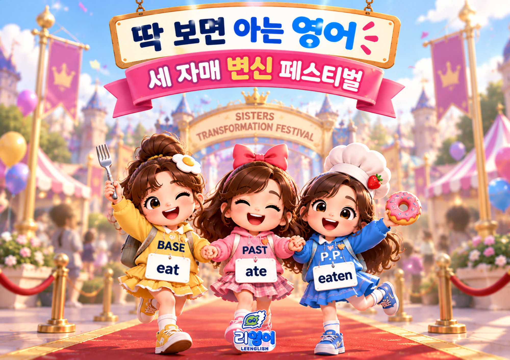
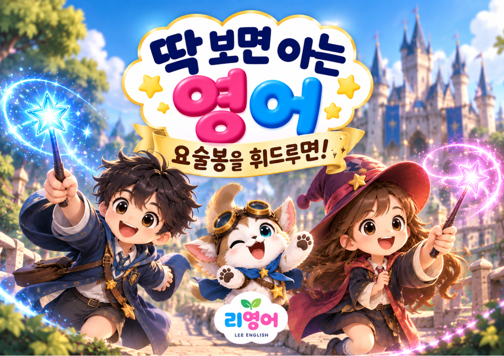
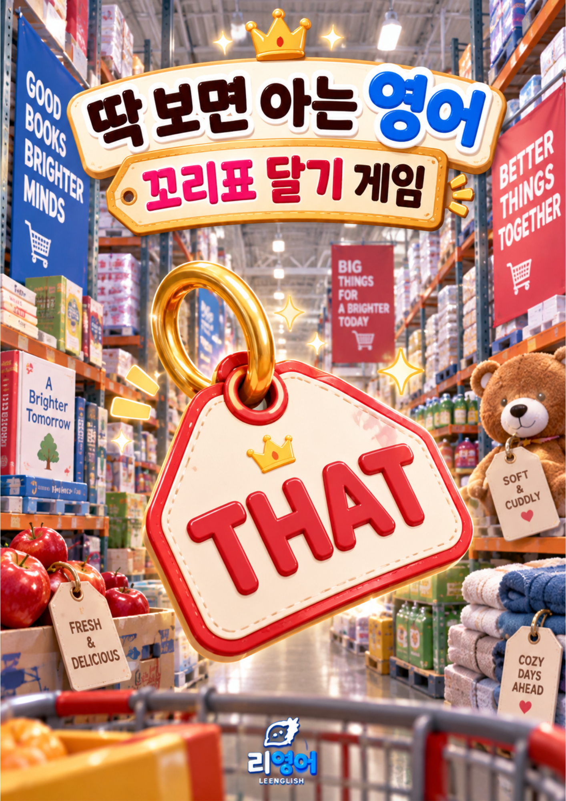

LEARNING WORLD · PHONICS
이름은 A, 그런데 소리는?
파닉스를 시작한 아이들에게 알파벳의 ‘이름’과 단어 속에서 실제로 나는 ‘소리’가 다르다는 것은 생각보다 큰 첫 관문입니다. 그래서 먼저 「알파벳 소리 연구소」라는 세계에서 이름과 소리의 차이를 만나봅니다.
필요한 순간에 게임을 켜고,
다시 실제 영어로 돌아옵니다.
영어 학습에는 반복이 필요합니다.
알파벳의 소리도, 새로운 단어도, 동사의 변화도, 처음 만나는 문장 구조도 한 번 설명했다고 바로 자기 것이 되지는 않습니다. 같은 것을 여러 번 만나고, 직접 선택하고, 틀려 보고, 다시 해보는 시간이 필요합니다.
게이미피케이션은 게임의 요소를 게임이 아닌 학습 과정에 활용하는 방법입니다. 여러 교육 연구에서도 게이미피케이션은 학습자의 참여와 반복, 학습 성과에 평균적으로 긍정적인 효과가 보고되어 왔습니다.
하지만 게임이라고 해서 자동으로 공부가 되는 것은 아닙니다. 어떤 내용을, 언제, 얼마나 반복하고, 그 경험을 실제 읽기·말하기·쓰기로 어떻게 연결하느냐가 더 중요합니다.
“리영어가 게임을 사용하는 이유도 바로 이 ‘반복’에 있습니다.”
게임은 수업을 대신하지 않습니다. 필요한 반복을 담당하는 하나의 학습 도구입니다.
리영어의 게임은 먼저 게임을 만들고 아이들에게 시키는 방식으로 시작하지 않습니다. 수업을 하다가 “지금 이 아이에게 무엇을 반복해야 할까?”라는 필요가 생기면 그 학습목표에 맞는 방법을 찾습니다.

파닉스를 시작한 아이들에게 알파벳의 ‘이름’과 단어 속에서 실제로 나는 ‘소리’가 다르다는 것은 생각보다 큰 첫 관문입니다. 그래서 먼저 「알파벳 소리 연구소」라는 세계에서 이름과 소리의 차이를 만나봅니다.

이제 직접 눌러보고, 듣고, 이어봅니다. 알파벳의 음가를 듣고 키캡을 선택하고, C-A-T처럼 소리를 이어 하나의 단어로 만드는 과정을 반복합니다.
🎮 소리 나는 키캡 가게 체험하기 학부모님도 아이들이 어떤 방식으로 소리를 반복하고 연결하는지 가볍게 체험해 보세요.어떤 개념은 이야기와 그림으로 만나는 것이 좋고, 어떤 개념은 종이에 직접 써보는 것이 좋고, 어떤 개념은 움직임을 영상으로 보는 것이 좋습니다.
그리고 반복해서 선택하고, 움직이고, 다시 시도하는 경험이 필요한 순간에는 게임을 사용합니다.
리영어가 선택하는 것은 ‘게임이냐 아니냐’가 아니라, “지금 이 학습에 어떤 방식이 가장 필요한가”입니다.

현재의 동사가 과거로 이동하며 -ed를 만나 변화하는 모습을 이야기로 경험합니다.

과거의 경험과 현재를 연결하는 현재완료의 시간 감각을 이야기와 영상으로 만납니다.

능동태와 수동태의 차이를 ‘문장의 주인공이 바뀐다’는 이미지로 먼저 경험합니다.
낯선 문법 이름부터 외우기보다 먼저 보고, 움직이고, 선택하고, 반복합니다. 충분히 익숙해진 뒤에는 학교 교과서와 시험에서 사용하는 정확한 문법 용어와 규칙도 함께 연결합니다.
“감각을 먼저 만들고, 이름은 나중에 정확하게 붙입니다.”

단어를 한 번 보고 외우는 대신, 게임 속에서 여러 번 만나고 선택하며 자연스럽게 반복합니다.
🧸 무인 인형 뽑기방 체험하기
동사원형 → 과거형 → 과거분사.
서로 다른 모습으로 변신하는 ‘세 자매’의 이미지와 함께 불규칙동사의 세 형태를 반복해서 만납니다.

형용사에 요술봉을 휘두르며 비교급과 최상급으로 변화시키는 과정을 통해 형태 변화의 규칙을 반복합니다.
🪄 요술봉을 휘두르면! 체험하기
물건에 설명 꼬리표를 붙이듯 the banana + that is yellow를 연결합니다. 관계대명사 that을 공식보다 먼저 ‘명사 뒤에 설명을 붙이는 감각’으로 경험합니다.
🏷️ 꼬리표 마트 체험하기게임에서 잘했다고 학습이 끝난 것은 아닙니다.
종이 카드에서도 읽을 수 있을까?
처음 보는 단어에서도 할 수 있을까?
문장 안에서도 알아볼 수 있을까?
직접 말하고 쓸 수 있을까?
한 학생이 소리 나는 키캡 게임에서 10,000포인트를 넘겼습니다. 하지만 제가 보고 싶었던 것은 게임의 점수가 아니었습니다.
화면을 끄고 실물 CVC 단어 카드를 꺼냈습니다. 게임에서 반복했던 소리를 종이 카드에서도 읽을 수 있는지, 처음 보는 단어에도 적용할 수 있는지 다시 확인했습니다.
그리고 짧은 글을 함께 읽으려던 순간, 아이가 말했습니다.
리영어가 보고 싶은 변화는 게임을 얼마나 오래 했는지가 아니라, 게임에서 연습한 것을 게임 없이도 할 수 있게 되는 순간입니다.
게임을 수업에서 사용하기 시작하면서 재미있는 일이 생겼습니다. 아이들이 단순한 사용자가 아니라 게임에 대한 의견을 내기 시작했습니다.
아이들은 자신들이 요즘 즐기는 게임을 보여주기도 하고, 어떤 버튼이 편한지, 어떤 기능이 재미있는지 알려주기도 합니다. 때로는 불편했던 점이나 추가하고 싶은 기능을 노트에 직접 적어 보여줍니다.
그렇게 아이들의 피드백을 받아 Quest도 수업과 함께 조금씩 달라집니다.
아이들은 수업의 소비자에 머물지 않고, 자신들이 배우는 방법에도 목소리를 냅니다.
Quest Hub는 아직 완성된 서비스가 아닙니다.
지금까지 리영어 수업에서 필요에 따라 하나씩 만들어 온 작은 Quest들이 있습니다. 앞으로 이 Quest들을 하나의 공간에 모아, 아이들이 지금 배우고 있는 내용에 필요한 Quest를 만나고 필요한 만큼 연습할 수 있도록 확장해 나가려고 합니다.
“Quest Hub는 게임을 모아놓은 게임방이 아닙니다.”
수업에서 발견한 학습목표에 따라 지금 필요한 Quest를 만나고, 충분히 익숙해지면 다시 게임 밖의 영어로 돌아오는 리영어의 학습 허브입니다.